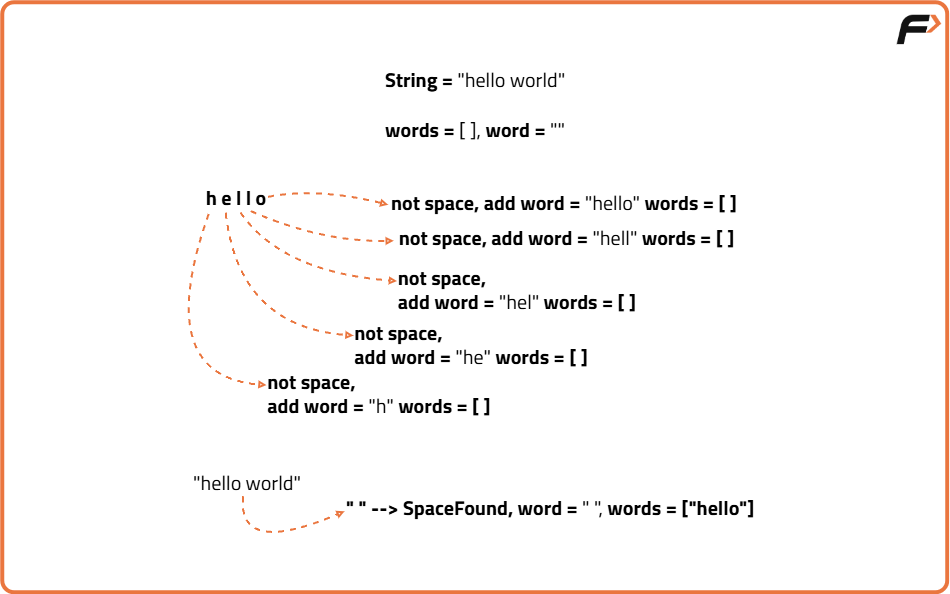
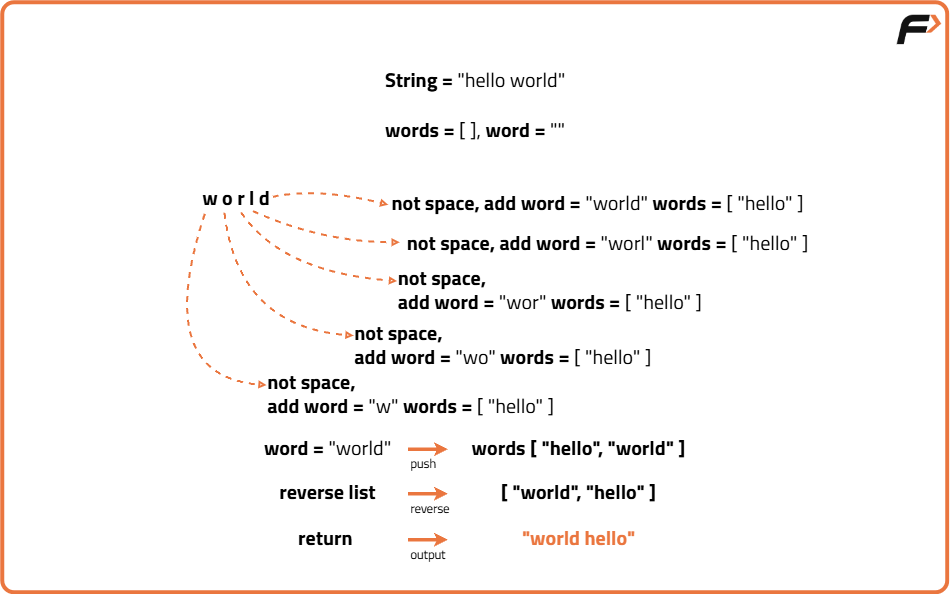
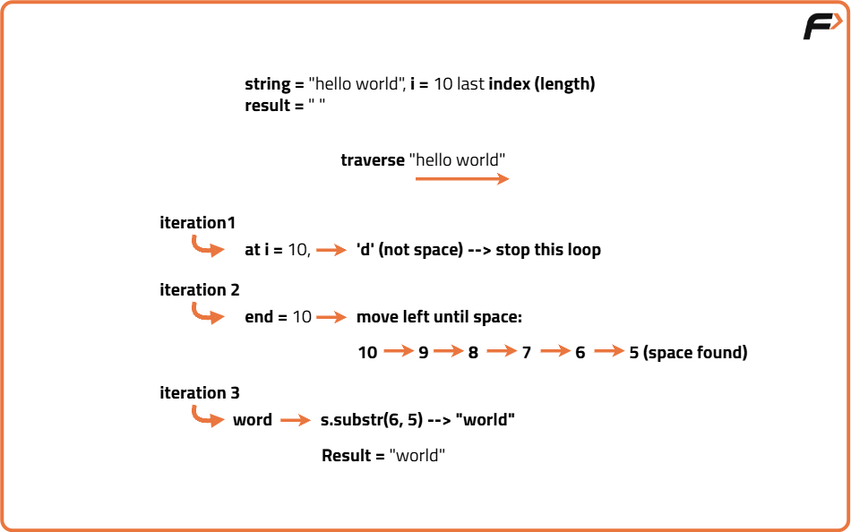
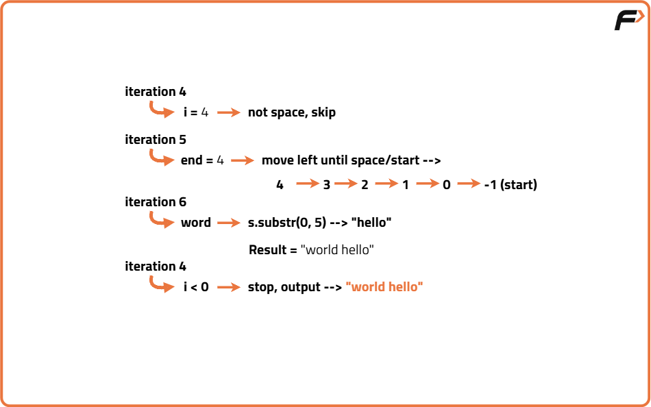

Reverse Words in a String
Problem Statement: Given an input string, containing upper-case and lower-case letters, digits, and spaces( ' ' ). A word is defined as a sequence of non-space characters. The words in s are separated by at least one space. Return a string with the words in reverse order, concatenated by a single space.
Examples
Input: s = "welcome to the jungle" Output: "jungle the to welcome" Explanation: The words in the input string are "welcome", "to", "the", and "jungle". Reversing the order of these words gives "jungle", "the", "to", and "welcome". The output string should have exactly one space between each word.
Input: s = " amazing coding skills " Output: "skills coding amazing" Explanation: The input string has leading and trailing spaces, as well as multiple spaces between the words "amazing", "coding", and "skills". After trimming the leading and trailing spaces and reducing the multiple spaces between words to a single space, the words are "amazing", "coding", and "skills". Reversing the order of these words gives "skills", "coding", and "amazing". The output string should not have any leading or trailing spaces and should have exactly one space between each word.
Disclaimer: Here is the practice link to help you assess your knowledge better. It's highly recommend trying to solve it before looking at the solution.
Brute Force Approach
Algorithm
- Initialize an empty list to store words.
- Traverse the string character by character.
- Identify consecutive non-space characters as a word.
- Ignore extra spaces and leading/trailing spaces while collecting words.
- Append each identified word to the list.
- Reverse the list of words.
- Join the reversed list into a single string using a single space.
- Return the resulting string.


Code
#include <bits/stdc++.h>
using namespace std;
class Solution {
public:
// Function to reverse the order of words in a string
string reverseWords(string s) {
// Vector to store words
vector<string> words;
// Temporary string to store a single word
string word = "";
// Traverse the string character by character
for (int i = 0; i < s.size(); i++) {
// If the character is not a space, add it to the current word
if (s[i] != ' ') {
word += s[i];
}
// If we encounter a space and have a word collected
else if (!word.empty()) {
// Push the collected word to words list
words.push_back(word);
// Reset word for next word collection
word = "";
}
}
// Push the last word if it exists
if (!word.empty()) {
words.push_back(word);
}
// Reverse the list of words
reverse(words.begin(), words.end());
// Join the words into a single string separated by spaces
string result = "";
for (int i = 0; i < words.size(); i++) {
result += words[i];
// Add a space if it's not the last word
if (i < words.size() - 1) {
result += " ";
}
}
return result;
}
};
// Driver code
int main() {
Solution obj;
string s = " amazing coding skills ";
cout << obj.reverseWords(s) << endl;
return 0;
}
Complexity Analysis
Time Complexity: O(N),We traverse the string once to collect words (O(N)) and once more to reverse and join them (O(N)). Hence total time is O(N).
Space Complexity: O(N),We store all words in a separate list/array, requiring extra space proportional to the number of characters.
Optimal Approach
Algorithm
- Initialize an empty result string.
- Set a pointer at the last character of the string.
- While the pointer is within the string:
- Skip all spaces to move to the end of a word.
- Mark the end position of the word.
- Move the pointer backward until a space or start of string is found.
- Extract the word and append it to the result string.
- If result is not empty, add a space before appending the next word.
- Return the result string.


Code
#include <bits/stdc++.h>
using namespace std;
class Solution {
public:
// Function to reverse the order of words
string reverseWords(string s) {
// Result string to store final output
string result = "";
// Pointer starting from the last character
int i = s.size() - 1;
// Traverse string from right to left
while (i >= 0) {
// Skip spaces at the current position
while (i >= 0 && s[i] == ' ') {
i--;
}
// If pointer is out of bounds, break
if (i < 0) break;
// Mark the end of the current word
int end = i;
// Move left until a space or start of string is found
while (i >= 0 && s[i] != ' ') {
i--;
}
// Extract the current word
string word = s.substr(i + 1, end - i);
// Add space before appending next word if result is not empty
if (!result.empty()) {
result += " ";
}
// Append the word to the result
result += word;
}
return result;
}
};
// Driver code
int main() {
Solution obj;
string s = " amazing coding skills ";
cout << obj.reverseWords(s) << endl;
return 0;
}
Complexity Analysis
Time Complexity: O(N), We traverse the string once from right to left and construct the result directly without extra passes.
Space Complexity: O(1),Ignoring the output string, no additional data structures proportional to input size are used.